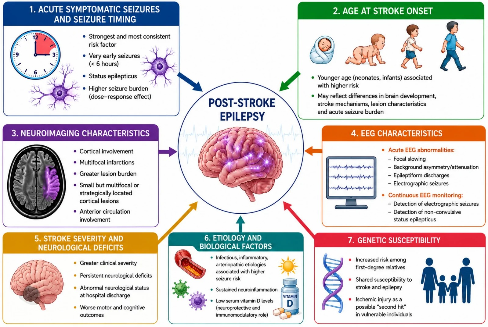
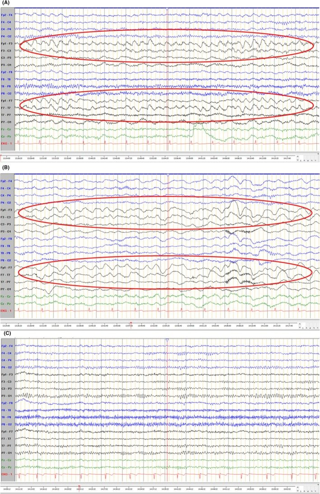
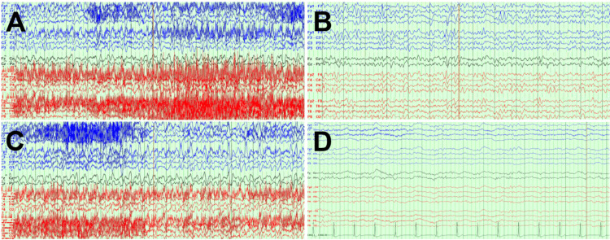
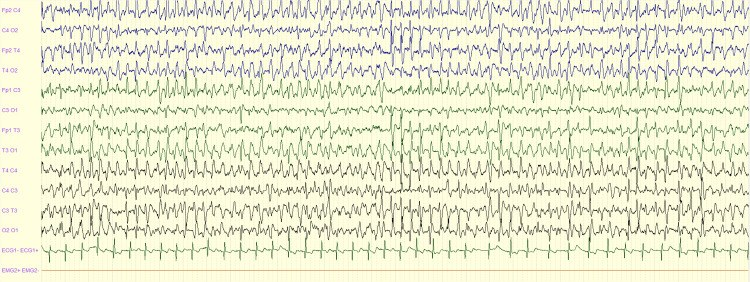

1987 — Trạng thái động kinh KHÔNG co giật ở trẻ sau đột quỵ: trẻ "không tỉnh" mà không co giật / Non-convulsive status epilepticus after paediatric stroke
Tags: pattern:dong-kinh pattern:phong-dien-lien-tuc pattern:tri-giac-khong-hoi-phuc pattern:thieu-mau-nao vung:nao score:Salzburg protocol:cEEG protocol:MRI-DWI
Mức chắc chắn (certainty): tổng hợp y văn (literature synthesis) — số liệu từ toàn văn của nghiên cứu tiến cứu 469 bệnh nhân/EEG kiểm định tiêu chuẩn Salzburg (Epilepsia Open 2024, PMC11514898, CC BY 4.0), tổng quan đột quỵ nhi – động kinh sau đột quỵ (Brain Sciences 2026, PMC13604746, CC BY 4.0), đồng thuận chuyên gia Bỉ về xử trí cơn cấp ở trẻ (Acta Neurologica Belgica 2026, PMC13242445, CC BY 4.0), hướng dẫn thực hành lâm sàng động kinh co giật ở trẻ (Neurosciences 2017, PMC5726823, CC BY-NC-SA) và bộ ca có ảnh EEG (PMC12574488, PMC13050277, PMC12634017). Nhóm không có bệnh nhân của mình; các con số về tỉ lệ NCSE ở trẻ sau đột quỵ hiện chưa có giá trị thống nhất — cần tra thêm, bài ghi rõ chỗ chưa rõ.
Câu chốt: trẻ sau đột quỵ không hồi phục tri giác trong 30–60 phút mà không còn cơn co giật nhìn thấy phải được coi là NCSE cho tới khi EEG loại trừ — vì cơn điện vẫn tiếp tục trong khi triệu chứng vận động đã hết. Chẩn đoán bằng cEEG theo tiêu chuẩn Salzburg (phóng điện động kinh > 2,5 Hz, hoặc ≤ 2,5 Hz/nhịp delta–theta > 0,5 Hz CÓ tiến triển không–thời gian, hoặc dấu hiệu cơn tinh tế, hoặc đáp ứng với thuốc chống động kinh đường tĩnh mạch); điều trị theo bậc như động kinh co giật nhưng đích là EEG, không phải "hết co giật". Bỏ sót = tổn thương não thêm do hưng phấn độc (excitotoxicity), tri giác không hồi phục bị quy oan cho "phù não do đột quỵ".
1. Tổng quan bệnh học – cơ chế hình ảnh (TẠI SAO)
1.1 Vì sao đột quỵ sinh ra cơn điện mà không co giật
- Mất cân bằng ức chế–hưng phấn tại bờ ổ nhồi máu: thiếu máu làm ATP giảm → bơm Na⁺/K⁺ thất bại → khử cực màng; glutamate ứ ngoại bào (giảm tái hấp thu) và GABA-A giảm chức năng → vùng vỏ quanh ổ (penumbra) tự phát nhịp.
- Vì sao không thấy co giật: cơn phát sinh từ vỏ não hoặc vùng sâu với đường dẫn truyền vận động bị tổn thương chỉ biểu hiện bằng rối loạn tri giác, hành vi, ngôn ngữ, giật cơ nhỏ ở mặt/ngón, lệch mắt, rung giật nhãn cầu — hoặc không gì cả. Ở trẻ đã đặt nội khí quản và an thần, triệu chứng vận động bị che hoàn toàn.
- Vì sao NCSE gây tổn thương thêm: phóng điện liên tục làm nhu cầu chuyển hóa vỏ não tăng trong khi cung cấp máu đã bị hạn chế → thiếu máu–thiếu oxy thứ phát, lan rộng vùng chết; kèm phù tế bào, tăng áp lực nội sọ, và rối loạn thần kinh thực vật (mạch nhanh, tăng huyết áp, tăng tiết). Đây là lý do thời gian phóng điện là biến số tiên lượng, và mỗi giờ chậm chẩn đoán đều có giá.
- Vì sao "đột quỵ không hồi phục" lại là NCSE: sau cơn co giật, EEG ở trẻ cần trung bình 120 phút (tối đa 300 phút) mới trở về nền; nếu không về nền, đó là phóng điện tiếp diễn chứ không phải "di chứng". Vì vậy EEG bình thường ngay sau cơn không loại trừ NCSE, và trẻ ngủ gà kéo dài phải chụp cEEG.
1.2 Ngưỡng định lượng nằm lòng
| Chỉ số | Con số | Nguồn |
|---|---|---|
| Động kinh sau đột quỵ động mạch ở trẻ | ~1/4 trẻ (khoảng 7% – > 40% giữa các nghiên cứu) | PMC13604746 |
| Cơn triệu chứng cấp / trạng thái động kinh là yếu tố dự báo mạnh nhất | ≈ 4 lần nguy cơ động kinh sau đột quỵ | PMC13604746 |
| Trạng thái động kinh trong cơn cấp ở đăng ký đột quỵ nhi | 16,0% (12/75) trẻ có cơn cấp | PMID 40435763 (bài 1799) |
| EEG trở về nền sau cơn ở trẻ | trung bình 120 phút, tối đa 300 phút | PMC13242445 |
| Ngưỡng "phải chụp EEG" | không tỉnh lại trong 30 phút – 1 giờ | PMC13242445 |
| Tiêu chuẩn Salzburg — phóng điện động kinh (ED) | > 2,5 Hz (chắc chắn NCSE) | PMC11514898 |
| Salzburg — nhánh tần số thấp | ED ≤ 2,5 Hz hoặc nhịp delta/theta > 0,5 Hz CÓ tiến triển không–thời gian → NCSE | PMC11514898 |
| Salzburg — nhánh lâm sàng | dấu hiệu cơn tinh tế (giật mi, lệch mắt, rung giật nhãn cầu) hoặc đáp ứng với ASM tĩnh mạch | PMC11514898 |
| Hiệu lực của tiêu chuẩn (469 bệnh nhân) | độ nhạy 94%, độ đặc hiệu 77%, PPV 34%, NPV 99%; tỉ lệ NCSE thực tế 11% | PMC11514898 |
| Phân bố mẫu EEG của NCSE | ED có tiến triển 60%, chuỗi nhịp/tuần hoàn 28%, ED > 2,5 Hz không tiến triển 8% | PMC11514898 |
| Cơn điện (electrographic seizure) — định nghĩa ACNS | hoạt động dạng động kinh ≥ 10 giây có tiến triển tần số/biên độ/hình thái | ACNS (định nghĩa chuẩn) |
| Thời gian ghi cEEG tối thiểu | ≥ 24 giờ (và ≥ 24 giờ không cơn trước khi kết thúc) | ACNS |
| cEEG phát hiện thêm cơn điện khi EEG thường âm tính | 8–48% bệnh nhân sau khi cơn co giật đã "ngừng" | PMC12941532 |
| EEG đầu giường (POC-EEG) ở cấp cứu nhi | đặt điện cực < 3 phút ở 100% (36 trẻ); 77,8% bác sĩ thấy dễ dùng | PMC12941532 |
| Liều lorazepam | 0,1 mg/kg (tối đa 4 mg), nhắc 1 lần sau 5–15 phút | PMC5726823 |
| Liều midazolam | IV 0,1 mg/kg (tối đa 10 mg); buccal 0,5 mg/kg; truyền: 0,15 mg/kg rồi 2 µg/kg/phút, tăng 2 µg/kg/phút mỗi 10–15 phút, tối đa 24 µg/kg/phút | PMC5726823 |
| Liều bậc 2 | phenytoin 20 mg/kg (tối đa 1.000 mg, truyền 20 phút) hoặc levetiracetam 20–60 mg/kg (tối đa 2.500 mg) hoặc valproat 20–40 mg/kg (tối đa 3.000 mg) hoặc phenobarbital 20 mg/kg (tối đa 1.000 mg, có thể tới 40 mg/kg) | PMC5726823 |
| Trạng thái kháng trị | thiopental 3–5 mg/kg rồi truyền 3–5 mg/kg/giờ, hoặc midazolam truyền — phải có cEEG để chuẩn độ | PMC5726823 |
1.3 Vì sao MRI/ASL giúp — và vì sao dễ nhầm
- DWI/ADC: ổ nhồi máu DWI sáng + ADC tối trong giờ đầu → ngày 7. Điểm quan trọng: trạng thái động kinh kéo dài tự nó gây giảm khuếch tán ở vỏ não và đồi hải mã (phù độc tế bào do phóng điện) — hình ảnh giống nhồi máu mới, nên không được gọi "nhồi máu lan rộng" khi trẻ đang trong cơn điện: chụp lại sau khi cắt cơn 48–72 giờ, tổn thương do cơn thường hồi phục hoặc không theo lãnh thổ mạch.
- ASL (arterial spin labeling): vùng đang phóng điện có tăng tưới máu vỏ não (tăng nhu cầu chuyển hóa–lưu lượng), trong khi ổ nhồi máu giảm tưới máu. Vì vậy ASL tăng ở vỏ não quanh ổ là gợi ý cơn đang hoạt động, không phải "nhồi máu thêm"; ASL lan theo vỏ, không theo lãnh thổ mạch.
- T2/FLAIR: phù do cơn tăng tín hiệu vỏ não, có thể đối xứng hoặc lan ra ngoài lãnh thổ; sau vài tuần có thể teo vỏ khu trú. Chụp muộn mới phân biệt được sẹo do cơn với sẹo nhồi máu.
- Hệ quả thực hành: hình ảnh không chẩn đoán NCSE — chẩn đoán là điện sinh lý; MRI dùng để tìm nguyên nhân, loại trừ chuyển dạng xuất huyết, và đánh giá tổn thương thứ phát.
2. Mẫu hình + chẩn đoán phân biệt theo vị trí (gamut)
Mẫu hình: trẻ đã được chẩn đoán đột quỵ động mạch (thường lãnh thổ động mạch não giữa, có tổn thương vỏ), sau 24–72 giờ vẫn không tỉnh/không tương tác, không còn cơn co giật, có thể giật mi, lệch mắt, giật ngón tay thoáng qua hoặc hoàn toàn im lặng (đã an thần).
Gamut "trẻ không hồi phục tri giác sau đột quỵ" — theo trục cơ chế:
- (1) Điện–động kinh: NCSE (bài này), cơn điện từng đợt (electrographic seizures), trạng thái động kinh co giật kín đáo (subtle SE).
- (2) Cơ học–huyết động: phù não lan rộng, tăng áp lực nội sọ, thoát vị, chuyển dạng xuất huyết, mở rộng nhồi máu/tái thông muộn.
- (3) Chuyển hóa–nội tiết: hạ natri máu (đặc biệt sau truyền dịch nhược trương), hạ đường huyết, tăng đường huyết, urê cao, hạ canxi/magiê, nhiễm toan.
- (4) Nhiễm trùng–viêm: viêm màng não do vi khuẩn (đặc biệt nếu đột quỵ do viêm nội tâm mạc), viêm não, sốc nhiễm khuẩn.
- (5) Thuốc: an thần/giãn cơ còn tác dụng (midazolam, fentanyl, vecuronium), ngộ độc, hội chứng cai.
- (6) Sau cơn (post-ictal): tê liệt Todd — hồi phục trong 24–48 giờ, không có phóng điện khi ghi lại.
Vị trí tổn thương quyết định kiểu trình bày: tổn thương vỏ MCA trái → thất ngôn / không đáp ứng lời; vỏ trán–đỉnh phải → bỏ qua nửa người, rối loạn chú ý; vỏ chẩm → ảo giác/thay đổi thị giác; thalami/đồi thị → rối loạn tri giác không kèm dấu khu trú — nhóm cuối dễ bị bỏ nhất vì không có gì để "nhìn".
3. Bảng so sánh phân biệt (ma trận đối chiếu)
| Thực thể (entity) | Hình ảnh / điện sinh lý điển hình | Chốt vào (rule-in) | Chốt loại (rule-out) | Gợi ý xác nhận |
|---|---|---|---|---|
| NCSE | cEEG: ED > 2,5 Hz, hoặc ED ≤ 2,5 Hz / nhịp delta–theta > 0,5 Hz có tiến triển không–thời gian, hoặc RPDs có "plus" | Tiêu chuẩn Salzburg thoả + không hồi phục tri giác | EEG 24 giờ không có phóng điện (và không có cơn lâm sàng) → loại NCSE | cEEG ≥ 24 giờ; đáp ứng với benzodiazepine làm mất phóng điện |
| Cơn điện từng đợt | cEEG: từng cơn ≥ 10 giây, cách nhau, có tiến triển | ≥ 1 cơn điện trên cEEG | Không có cơn điện → loại | Tiêu chuẩn ACNS; đếm gánh nặng cơn (% thời gian) |
| Trạng thái co giật kín đáo (subtle SE) | Co giật đã ngừng nhưng còn giật mi/ngón; EEG vẫn phóng điện | Phóng điện liên tục + dấu vận động tinh tế | Đã ngừng hẳn vận động và EEG sạch → loại | cEEG đồng thời video |
| Phù não / tăng áp lực nội sọ | CT/MRI: xoá rãnh cuộn não, mất phân biệt xám–trắng, lệch đường giữa, giãn não thất | Lệch đường giữa + dấu hiệu thoát vị | EEG sạch + không lệch đường giữa → loại NCSE là nguyên nhân chính | CT/MRI cấp, siêu âm qua thóp, theo dõi ICP |
| Chuyển dạng xuất huyết | SWI/T2: mất tín hiệu "blooming"* trong ổ nhồi máu; CT: tăng đậm độ mới | Máu trong ổ trên SWI | SWI âm → loại | Chụp lại CT/SWI khi tri giác xấu đi |
| Rối loạn chuyển hóa (hạ Na, hạ glucose) | MRI thường bình thường hoặc phù lan toả; EEG: chậm lan toả, không tiến triển | Na/glucose bất thường + sửa là hết | Điện giải bình thường → loại | Xét nghiệm khẩn; sửa rồi ghi lại EEG |
| Tác dụng thuốc an thần | EEG: chậm, hoạt động beta lan toả, không tiến triển | Ngưng thuốc → tri giác cải thiện | Phóng điện có tiến triển → loại | Rà soát giờ dùng thuốc, dùng flumazenil/narcan thận trọng |
| Tê liệt Todd sau cơn | MRI: không tổn thương mới; EEG: chậm khu trú, không phóng điện | Hồi phục trong 24–48 giờ | Không hồi phục + phóng điện → không phải post-ictal | Theo dõi lâm sàng + EEG lặp |
Cạm bẫy phân biệt trên EEG: sóng ba pha (triphasic waves) ở bệnh não chuyển hóa không phải NCSE dù trông "nhịp"; RPDs không có "plus" thường không đủ tiêu chuẩn; SIRPIDs (phóng điện theo kích thích) không phải cơn — đừng tăng thuốc vì chúng.

Sơ đồ tổng hợp: cơn triệu chứng cấp và trạng thái động kinh đứng đầu nhóm yếu tố nguy cơ, cùng tổn thương vỏ não và gánh nặng tổn thương — đây chính là nhóm trẻ cần cEEG và theo dõi dài hạn. Nguồn: PMC13604746, CC BY 4.0.4. Protocol + hệ phân độ/điểm chuẩn hóa
4.1 Ai cần cEEG (chỉ định ở trẻ sau đột quỵ)
- Không tỉnh/không tương tác > 30–60 phút sau khi đã xử lý chuyển hóa và giảm an thần.
- Co giật đã ngừng nhưng còn dấu vận động tinh tế (giật mi, ngón, lệch mắt, rung giật nhãn cầu).
- Co giật kéo dài > 10 phút hoặc ≥ 3 cơn/giờ trong 24 giờ đầu.
- Đã dùng thuốc giãn cơ/an thần → không thể đánh giá lâm sàng → cEEG bắt buộc.
- Tri giác xấu đi mà CT không giải thích được.
4.2 Kỹ thuật
- Hệ điện cực 10–20 rút gọn tối thiểu (Fp1/Fp2, C3/C4, T3/T4, O1/O2, trung tính) + video; nếu có điều kiện 10–20 đầy đủ.
- Thời lượng: tối thiểu 24 giờ; nếu có cơn → tiếp tục tới 24 giờ không cơn; sau khi giảm/tháo an thần phải ghi lại ≥ 24 giờ (cơn hay tái phát khi giảm thuốc).
- Đọc và ghi báo cáo theo mẫu ACNS: nền, tần số và biên độ phóng điện, tiến triển, "plus" features, gánh nặng cơn (% thời gian), đáp ứng kích thích.
- Chẩn đoán theo Salzburg rồi phân loại "chắc chắn / có thể / không NCSE" — nhớ PPV chỉ 34% nếu chỉ dựa tiêu chuẩn mà bỏ bối cảnh lâm sàng.
4.3 Điều trị — đích là EEG, không phải "hết co giật"
| Bậc | Thuốc / liều (trẻ) | Đích |
|---|---|---|
| 1 | Lorazepam 0,1 mg/kg (tối đa 4 mg) TM, nhắc 1 lần sau 5–15 phút (hoặc midazolam 0,1 mg/kg TM / 0,5 mg/kg qua niêm mạc má) | Hết phóng điện trên EEG hoặc giảm ≥ 50% gánh nặng cơn |
| 2 | Levetiracetam 20–60 mg/kg (tối đa 2.500 mg) hoặc phenytoin 20 mg/kg (tối đa 1.000 mg, truyền 20 phút) hoặc valproat 20–40 mg/kg hoặc phenobarbital 20 mg/kg | Không còn phóng điện liên tục |
| 3 (kháng trị) | Midazolam truyền 0,15 mg/kg rồi 2 µg/kg/phút, tăng 2 µg/kg/phút mỗi 10–15 phút tới 24 µg/kg/phút; hoặc thiopental 3–5 mg/kg rồi 3–5 mg/kg/giờ | Burst-suppression hoặc hết phóng điện trên cEEG liên tục |
| 4 (super-refractory) | Phối hợp/ketamine/propofol theo đơn vị hồi sức, luôn có cEEG | Cắt cơn điện; tránh hạ huyết áp (giảm tưới máu vùng penumbra) |
Nguyên tắc: ở trẻ sau đột quỵ, hạ huyết áp do an thần là nguy hiểm — chuẩn độ chậm, có đích EEG, giữ huyết áp đủ tưới máu; thuốc chống động kinh dự phòng dài hạn không dùng chỉ vì có cơn cấp (xem bài 1799).
flowchart TD
A[Trẻ sau đột quỵ không hồi phục tri giác] --> B[Loại trừ: hạ Na, hạ/tăng glucose, urê, thuốc an thần, nhiễm trùng]
B --> C[cEEG 10-20 rút gọn, tối thiểu 24 giờ]
C --> D{Có phóng điện động kinh?}
D -->|ED > 2,5 Hz| E[NCSE chắc chắn]
D -->|ED ≤ 2,5 Hz hoặc nhịp delta-theta > 0,5 Hz CÓ tiến triển| E
D -->|Chỉ RPDs không plus, sóng ba pha, chậm lan toả| F[Không NCSE: tìm nguyên nhân khác]
E --> G[Bậc 1: lorazepam 0,1 mg/kg]
G --> H{EEG sạch?}
H -->|Không| I[Bậc 2: levetiracetam hoặc phenytoin hoặc valproat]
I --> J{Còn phóng điện?}
J -->|Còn| K[Bậc 3: midazolam/thiopental truyền, chuẩn độ theo cEEG]
J -->|Hết| L[cEEG tiếp 24 giờ không cơn, giảm thuốc có giám sát]
K --> L
L --> M[MRI lại sau 48-72 giờ: phân biệt tổn thương do cơn với nhồi máu lan rộng]
4.4 Sau cắt cơn — ba việc phải làm
- Ghi lại cEEG sau khi giảm an thần (cơn tái phát 20–30% khi tháo thuốc — chưa rõ con số chính xác ở trẻ sau đột quỵ).
- MRI lại 48–72 giờ (DWI/ASL) để không gọi nhầm tổn thương do cơn là nhồi máu mới.
- Quyết định thuốc dài hạn theo bài 1799, không theo cảm giác "đã có cơn thì phải dùng mãi".
5. Biến thể bình thường và cạm bẫy
- "Trẻ ngủ nhiều sau đột quỵ là bình thường": không. Không hồi phục trong 30–60 phút là chỉ định cEEG; đây là cạm bẫy bỏ sót phổ biến nhất.
- EEG thường (30 phút) âm tính: cơn điện từng đợt có thể không xuất hiện trong 30 phút — 8–48% bệnh nhân còn cơn sau khi cơn co giật đã ngừng. Âm tính không loại trừ.
- Tê liệt Todd bị gọi là "đột quỵ nặng thêm": yếu nửa người sau cơn hồi phục 24–48 giờ, không có phóng điện khi ghi lại.
- Sóng ba pha & SIRPIDs: tăng thuốc chống động kinh vì "trông như cơn" → an thần quá mức, tụt huyết áp, chậm hồi phục.
- DWI lan rộng trong cơn: giảm khuếch tán do trạng thái động kinh ở vỏ/đồi hải mã hồi phục — đừng kết luận "nhồi máu lan" rồi thay đổi chiến lược tái thông.
- Hạ natri do rửa/ truyền dịch: ở trẻ sau đột quỵ, hạ Na máu vừa gây co giật vừa bắt chước NCSE — luôn xét nghiệm trước khi kết luận.
- Hết co giật ≠ hết trạng thái: cơn co giật chuyển thành cơn điện (subtle SE) là quy luật ở trẻ đã dùng benzodiazepine — không được dừng theo dõi khi "hết co giật".
6. Tự lượng giá — Blind Quiz
Ca 1 — Bé gái 9 tuổi, nhồi máu não giữa trái ngày thứ 2. Không nói, không làm theo lệnh, không co giật. Nhìn EEG, mô tả trước.

- Gợi ý: mắt mở, không nhìn theo, thỉnh thoảng giật mi trái.
- Câu hỏi: mẫu hình EEG? Đủ tiêu chuẩn Salzburg không? Bước tiếp theo?
Bấm để hiện đáp án (findings + chẩn đoán)
- Findings: (A, B) nhịp delta–theta nhanh (LRDA) 2,5–3,0 Hz, chiếm ~95% của 20 phút ghi, có tiến triển về tần số/biên độ giữa các đoạn; (C) sau thuốc chống động kinh: nhịp chậm, mất phóng điện.
- Chẩn đoán: NCSE — thoả nhánh tần số thấp của Salzburg (nhịp > 0,5 Hz có tiến triển không–thời gian) và có đáp ứng với ASM.
- Bước tiếp theo: lorazepam 0,1 mg/kg, ghi lại EEG, bậc 2 nếu còn phóng điện; giữ huyết áp.
- Nguồn ảnh: Epileptic Disorders 2025, PMC12574488, Fig. 2, CC BY 4.0 (bệnh nhân của bài gốc).
Ca 2 — Bé trai 6 tuổi, đột quỵ nhồi máu + xuất huyết dưới màng cứng, nghi nhiễm khuẩn thần kinh. Vẫn lơ mơ sau khi ngừng an thần 12 giờ.

- Câu hỏi: (A) có phóng điện không? (B) thay đổi gì, và thay đổi đó chứng minh điều gì?
Bấm để hiện đáp án
- Findings: (A) hoạt động nhịp liên tục dạng động kinh, mất nhịp alpha chẩm; (B) sau lorazepam: hết phóng điện, nền chậm lại.
- Ý nghĩa: đáp ứng với ASM tĩnh mạch là một trong các tiêu chuẩn Salzburg → củng cố chẩn đoán NCSE; đây cũng là phép thử điều trị (test of treatment).
- Cạm bẫy: đừng coi "hết co giật" là hết trạng thái — trẻ này chưa từng co giật trong đợt này.
- Nguồn ảnh: Cureus 2026, PMC13050277, Fig. 3, CC BY 4.0.
Ca 3 — Bé gái 12 tuổi, nhồi máu não giữa phải, hôn mê, thở máy, đã dùng giãn cơ. cEEG dưới đây.

- Câu hỏi: vì sao phải chụp cEEG ở trẻ đã giãn cơ? Mẫu hình này thuộc nhóm nào?
Bấm để hiện đáp án
- Findings: phóng điện động kinh toàn thể, nhịp nhanh, liên tục — không có triệu chứng lâm sàng vì đã giãn cơ.
- Chẩn đoán: NCSE — nhóm "chỉ thấy trên EEG"; ở trẻ thở máy/giãn cơ, lâm sàng không thể loại trừ.
- Xử trí: bậc 1 → bậc 2 → truyền midazolam chuẩn độ theo EEG, giữ huyết áp; ghi lại 24 giờ sau khi giảm thuốc.
- Nguồn ảnh: Cureus 2025, PMC12634017, Fig. 2, CC BY 4.0.
Bài liên quan chéo
- 1799 – Động kinh sau đột quỵ ở trẻ
- 1785 – Động kinh sau tái thông moyamoya ở trẻ
- 1430 – Độc thần kinh cấp sau CAR-T (ICANS)
- 600 – Tổng quan Nhi khoa
- 200 – Tổng quan Thần kinh
Ảnh
images/1987_ncse_PMC12574488-EPD2-27-1060-g001.jpg— LRDA 2,5–3 Hz có tiến triển, trước/sau ASM (CC BY 4.0)images/1987_ncse_PMC13050277-cureus-0018-00000104724-i03.jpg— EEG trước/sau lorazepam (CC BY 4.0)images/1987_ncse_PMC12634017-cureus-0017-00000095086-i02.jpg— phóng điện toàn thể trong NCSE (CC BY 4.0)images/1987_ncse_PMC13604746-brainsci-16-00907-g002.jpg— sơ đồ yếu tố nguy cơ động kinh sau đột quỵ ở trẻ (CC BY 4.0)- Nguồn + giấy phép từng ảnh:
images/CREDITS.md.
Không dùng để chẩn đoán độc lập khi chưa có người hướng dẫn.